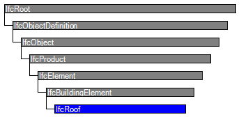
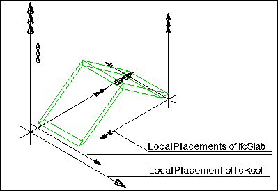

Natural language names
 | Dach |
 | Roof |
 | Toiture |
| Dach |
| Roof |
| Toiture |
| Item | SPF | XML | Change | Description | IFC2x3 to IFC4 |
|---|---|---|---|---|
| IfcRoof | ||||
| OwnerHistory | MODIFIED | Instantiation changed to OPTIONAL. | ||
| PredefinedType | X | MODIFIED | Name changed from ShapeType to PredefinedType. Instantiation changed to OPTIONAL. |
A roof is the covering of the top part of a building, it protects the building against the effects of wheather.
NOTE Definition according to ISO 6707-1: construction enclosing the building from above.
The IfcRoof shall either be represented:
NOTE In case of an IfcRoof being the assembly of all parts of the roof the aggregation is handled by the IfcRelAggregates relationship, relating an IfcRoof with the related roof elements, like slabs (represented by IfcSlab), rafters and purlins (represented by IfcBeam), or other included roofs, such as dormers (represented by IfcRoof).
NOTE Model View Definitions and implementer agreements may restrict the IfcRoof being an assembly to not have an independent shape representation, but to always require that the decomposed parts have a shape representation. In this case, at least the 'Body' geometric representations shall not be provided directly at IfcRoof if it is an assembly. The 'Body' geometric representation of the IfcRoof is then the sum of the 'Body' shape representation of the parts within the decomposition structure.
HISTORY New entity in IFC2.0.
IFC4 CHANGE Attribute ShapeType renamed to PredefinedType.
| # | Attribute | Type | Cardinality | Description | C |
|---|---|---|---|---|---|
| 9 | PredefinedType | IfcRoofTypeEnum | [0:1] |
Predefined generic types for a roof that are specified in an enumeration. There may be a property set given for the predefined types.
NOTE The PredefinedType shall only be used, if no IfcRoofType is assigned, providing its own IfcRoofType.PredefinedType. | X |
| Rule | Description |
|---|---|
| CorrectPredefinedType | Either the PredefinedType attribute is unset (e.g. because an IfcRoofType is associated), or the inherited attribute ObjectType shall be provided, if the PredefinedType is set to USERDEFINED. |
| CorrectTypeAssigned | Either there is no roof type object associated, i.e. the IsTypedBy inverse relationship is not provided, or the associated type object has to be of type IfcRoofType. |

| # | Attribute | Type | Cardinality | Description | C |
|---|---|---|---|---|---|
| IfcRoot | |||||
| 1 | GlobalId | IfcGloballyUniqueId | [1:1] | Assignment of a globally unique identifier within the entire software world. | X |
| 2 | OwnerHistory | IfcOwnerHistory | [0:1] |
Assignment of the information about the current ownership of that object, including owning actor, application, local identification and information captured about the recent changes of the object,
NOTE only the last modification in stored - either as addition, deletion or modification. | X |
| 3 | Name | IfcLabel | [0:1] | Optional name for use by the participating software systems or users. For some subtypes of IfcRoot the insertion of the Name attribute may be required. This would be enforced by a where rule. | X |
| 4 | Description | IfcText | [0:1] | Optional description, provided for exchanging informative comments. | X |
| IfcObjectDefinition | |||||
| HasAssignments | IfcRelAssigns @RelatedObjects | S[0:?] | Reference to the relationship objects, that assign (by an association relationship) other subtypes of IfcObject to this object instance. Examples are the association to products, processes, controls, resources or groups. | X | |
| Nests | IfcRelNests @RelatedObjects | S[0:1] | References to the decomposition relationship being a nesting. It determines that this object definition is a part within an ordered whole/part decomposition relationship. An object occurrence or type can only be part of a single decomposition (to allow hierarchical strutures only). | X | |
| IsNestedBy | IfcRelNests @RelatingObject | S[0:?] | References to the decomposition relationship being a nesting. It determines that this object definition is the whole within an ordered whole/part decomposition relationship. An object or object type can be nested by several other objects (occurrences or types). | X | |
| HasContext | IfcRelDeclares @RelatedDefinitions | S[0:1] | References to the context providing context information such as project unit or representation context. It should only be asserted for the uppermost non-spatial object. | X | |
| IsDecomposedBy | IfcRelAggregates @RelatingObject | S[0:?] | References to the decomposition relationship being an aggregation. It determines that this object definition is whole within an unordered whole/part decomposition relationship. An object definitions can be aggregated by several other objects (occurrences or parts). | X | |
| Decomposes | IfcRelAggregates @RelatedObjects | S[0:1] | References to the decomposition relationship being an aggregation. It determines that this object definition is a part within an unordered whole/part decomposition relationship. An object definitions can only be part of a single decomposition (to allow hierarchical strutures only). | X | |
| HasAssociations | IfcRelAssociates @RelatedObjects | S[0:?] | Reference to the relationship objects, that associates external references or other resource definitions to the object.. Examples are the association to library, documentation or classification. | X | |
| IfcObject | |||||
| 5 | ObjectType | IfcLabel | [0:1] |
The type denotes a particular type that indicates the object further. The use has to be established at the level of instantiable subtypes. In particular it holds the user defined type, if the enumeration of the attribute PredefinedType is set to USERDEFINED.
| X |
| IsDeclaredBy | IfcRelDefinesByObject @RelatedObjects | S[0:1] | Link to the relationship object pointing to the declaring object that provides the object definitions for this object occurrence. The declaring object has to be part of an object type decomposition. The associated IfcObject, or its subtypes, contains the specific information (as part of a type, or style, definition), that is common to all reflected instances of the declaring IfcObject, or its subtypes. | X | |
| Declares | IfcRelDefinesByObject @RelatingObject | S[0:?] | Link to the relationship object pointing to the reflected object(s) that receives the object definitions. The reflected object has to be part of an object occurrence decomposition. The associated IfcObject, or its subtypes, provides the specific information (as part of a type, or style, definition), that is common to all reflected instances of the declaring IfcObject, or its subtypes. | X | |
| IsTypedBy | IfcRelDefinesByType @RelatedObjects | S[0:1] | Set of relationships to the object type that provides the type definitions for this object occurrence. The then associated IfcTypeObject, or its subtypes, contains the specific information (or type, or style), that is common to all instances of IfcObject, or its subtypes, referring to the same type. | X | |
| IsDefinedBy | IfcRelDefinesByProperties @RelatedObjects | S[0:?] | Set of relationships to property set definitions attached to this object. Those statically or dynamically defined properties contain alphanumeric information content that further defines the object. | X | |
| IfcProduct | |||||
| 6 | ObjectPlacement | IfcObjectPlacement | [0:1] | Placement of the product in space, the placement can either be absolute (relative to the world coordinate system), relative (relative to the object placement of another product), or constraint (e.g. relative to grid axes). It is determined by the various subtypes of IfcObjectPlacement, which includes the axis placement information to determine the transformation for the object coordinate system. | X |
| 7 | Representation | IfcProductRepresentation | [0:1] | Reference to the representations of the product, being either a representation (IfcProductRepresentation) or as a special case a shape representations (IfcProductDefinitionShape). The product definition shape provides for multiple geometric representations of the shape property of the object within the same object coordinate system, defined by the object placement. | X |
| ReferencedBy | IfcRelAssignsToProduct @RelatingProduct | S[0:?] | Reference to the IfcRelAssignsToProduct relationship, by which other products, processes, controls, resources or actors (as subtypes of IfcObjectDefinition) can be related to this product. | X | |
| IfcElement | |||||
| 8 | Tag | IfcIdentifier | [0:1] | The tag (or label) identifier at the particular instance of a product, e.g. the serial number, or the position number. It is the identifier at the occurrence level. | X |
| FillsVoids | IfcRelFillsElement @RelatedBuildingElement | S[0:1] | Reference to the IfcRelFillsElement Relationship that puts the element as a filling into the opening created within another element. | X | |
| ConnectedTo | IfcRelConnectsElements @RelatingElement | S[0:?] | Reference to the element connection relationship. The relationship then refers to the other element to which this element is connected to. | X | |
| IsInterferedByElements | IfcRelInterferesElements @RelatedElement | S[0:?] | Reference to the interference relationship to indicate the element that is interfered. The relationship, if provided, indicates that this element has an interference with one or many other elements.
NOTE There is no indication of precedence between IsInterferedByElements and InterferesElements. | X | |
| InterferesElements | IfcRelInterferesElements @RelatingElement | S[0:?] | Reference to the interference relationship to indicate the element that interferes. The relationship, if provided, indicates that this element has an interference with one or many other elements.
NOTE There is no indication of precedence between IsInterferedByElements and InterferesElements. | X | |
| HasProjections | IfcRelProjectsElement @RelatingElement | S[0:?] | Projection relationship that adds a feature (using a Boolean union) to the IfcBuildingElement. | X | |
| ReferencedInStructures | IfcRelReferencedInSpatialStructure @RelatedElements | S[0:?] | Reference relationship to the spatial structure element, to which the element is additionally associated. This relationship may not be hierarchical, an element may be referenced by zero, one or many spatial structure elements. | X | |
| HasOpenings | IfcRelVoidsElement @RelatingBuildingElement | S[0:?] | Reference to the IfcRelVoidsElement relationship that creates an opening in an element. An element can incorporate zero-to-many openings. For each opening, that voids the element, a new relationship IfcRelVoidsElement is generated. | X | |
| IsConnectionRealization | IfcRelConnectsWithRealizingElements @RealizingElements | S[0:?] | Reference to the connection relationship with realizing element. The relationship, if provided, assigns this element as the realizing element to the connection, which provides the physical manifestation of the connection relationship. | X | |
| ProvidesBoundaries | IfcRelSpaceBoundary @RelatedBuildingElement | S[0:?] | Reference to space boundaries by virtue of the objectified relationship IfcRelSpaceBoundary. It defines the concept of an element bounding spaces. | X | |
| ConnectedFrom | IfcRelConnectsElements @RelatedElement | S[0:?] | Reference to the element connection relationship. The relationship then refers to the other element that is connected to this element. | X | |
| ContainedInStructure | IfcRelContainedInSpatialStructure @RelatedElements | S[0:1] | Containment relationship to the spatial structure element, to which the element is primarily associated. This containment relationship has to be hierachical, i.e. an element may only be assigned directly to zero or one spatial structure. | X | |
| HasCoverings | IfcRelCoversBldgElements @RelatingBuildingElement | S[0:?] | Reference to IfcCovering by virtue of the objectified relationship IfcRelCoversBldgElement. It defines the concept of an element having coverings associated. | X | |
| IfcBuildingElement | |||||
| IfcRoof | |||||
| 9 | PredefinedType | IfcRoofTypeEnum | [0:1] |
Predefined generic types for a roof that are specified in an enumeration. There may be a property set given for the predefined types.
NOTE The PredefinedType shall only be used, if no IfcRoofType is assigned, providing its own IfcRoofType.PredefinedType. | X |
Object Typing
The Object Typing concept applies to this entity as shown in Table 154.
| ||
Table 154 — IfcRoof Object Typing |
Property Sets for Objects
The Property Sets for Objects concept applies to this entity as shown in Table 155.
| ||||||||||||||||||||||||||||||||||||||||||||||||||||||||||||||||||||||||||||||||||||||||||||||||||||||||||||||||||||||||||||||||||||||||||||||||||||||||||||||||||||||||||||||||||||||||||||||||||||||||||||||||||||||||||||||||||||||||||||||||||||||||||||||||||||||||||||||||||||||||||||||
Table 155 — IfcRoof Property Sets for Objects |
Quantity Sets
The Quantity Sets concept applies to this entity as shown in Table 156.
| ||
Table 156 — IfcRoof Quantity Sets |
Spatial Containment
The Spatial Containment concept applies to this entity as shown in Table 157.
| ||||||||
Table 157 — IfcRoof Spatial Containment |
Element Decomposition
The Element Decomposition concept applies to this entity as shown in Table 158.
| ||||
Table 158 — IfcRoof Element Decomposition |
Geometric representation by aggregated elements
If the IfcRoof has components (referenced by SELF\IfcObject.IsDecomposedBy) then no independent geometric representation shall defined for the IfcRoof. The IfcRoof is then geometrically represented by the geometric representation of its components. The components are accessed via SELF\IfcObject.IsDecomposedBy[1].RelatedObjects. The geometric representations that are supported for the aggregated elements are defined with each element. See geometric use definition for IfcSlab, IfcBeam, IfcColumn, IfcBuildingElementPart and other subtypes of IfcBuildingElement.
Figure 231 illustrates roof placement, with an IfcRoof defining the local placement for all aggregated elements.
 |
Figure 231 — Roof placement |
Product Local Placement
The Product Local Placement concept applies to this entity as shown in Table 159.
| ||||||||||||
Table 159 — IfcRoof Product Local Placement |
The following restriction may be imposed by view definitions or implementer agreements:
| # | Concept | Model View |
|---|---|---|
| IfcRoot | ||
| Software Identity | Common Use Definitions | |
| Revision Control | Common Use Definitions | |
| IfcObject | ||
| Object Occurrence Predefined Type | Common Use Definitions | |
| IfcElement | ||
| Box Geometry | Common Use Definitions | |
| FootPrint Geometry | Common Use Definitions | |
| Body SurfaceOrSolidModel Geometry | Common Use Definitions | |
| Body SurfaceModel Geometry | Common Use Definitions | |
| Body Tessellation Geometry | Common Use Definitions | |
| Body Brep Geometry | Common Use Definitions | |
| Body AdvancedBrep Geometry | Common Use Definitions | |
| Body CSG Geometry | Common Use Definitions | |
| Mapped Geometry | Common Use Definitions | |
| Mesh Geometry | Common Use Definitions | |
| IfcBuildingElement | ||
| Product Assignment | Common Use Definitions | |
| Surface 3D Geometry | Common Use Definitions | |
| IfcRoof | ||
| Object Typing | Common Use Definitions | |
| Property Sets for Objects | Common Use Definitions | |
| Quantity Sets | Common Use Definitions | |
| Spatial Containment | Common Use Definitions | |
| Element Decomposition | Common Use Definitions | |
| Product Local Placement | Common Use Definitions | |
<xs:element name="IfcRoof" type="ifc:IfcRoof" substitutionGroup="ifc:IfcBuildingElement" nillable="true"/>
<xs:complexType name="IfcRoof">
<xs:complexContent>
<xs:extension base="ifc:IfcBuildingElement">
<xs:attribute name="PredefinedType" type="ifc:IfcRoofTypeEnum" use="optional"/>
</xs:extension>
</xs:complexContent>
</xs:complexType>
ENTITY IfcRoof
SUBTYPE OF (IfcBuildingElement);
PredefinedType : OPTIONAL IfcRoofTypeEnum;
WHERE
CorrectPredefinedType : NOT(EXISTS(PredefinedType)) OR
(PredefinedType <> IfcRoofTypeEnum.USERDEFINED) OR
((PredefinedType = IfcRoofTypeEnum.USERDEFINED) AND EXISTS (SELF\IfcObject.ObjectType));
CorrectTypeAssigned : (SIZEOF(IsTypedBy) = 0) OR
('IFCSHAREDBLDGELEMENTS.IFCROOFTYPE' IN TYPEOF(SELF\IfcObject.IsTypedBy[1].RelatingType));
END_ENTITY;
 Instance diagram
Instance diagram Link to this page
Link to this page